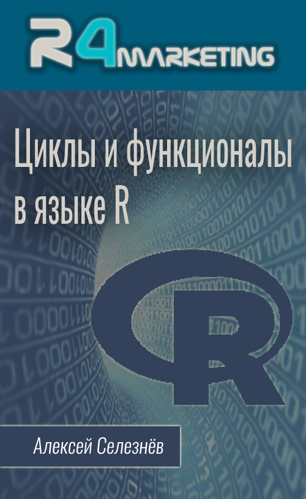

Введение
О курсе
Если вы недавно начали изучать язык R, то наверняка неоднократно слышали от более опытных коллег фразу “В R не принято использовать циклы”. Связано это негласное правило с тем, что большинство функций в языке R поддерживают векторизацию, т.е. они уже под капотом имеют встроенный механизм итерирования. Даже если нужная вам функция не поддерживает векторизацию, вы всегда можете использовать функциональный стиль программирования.
Циклы, и в целом итерационные конструкции, позволяют избегать излишнего дублирования кода. Основная проблема новичков, которые только начинают учить язык R заключаются в том, что в неумелых руках циклы в R используются не эффективно, и зачастую применяются там, где они вообще не нужны. Цель этого курса научить вас эффективно использовать итерационные конструкции в языке R, и познакомить с функциональным стилем программирования, и многопоточным режимом выполнения скриптов.
Этот курс поможет вам погрузиться в тему итерационных конструкций языка R и разобраться во всём их многообразии. Первая лекция даст вам вводную информацию о базовых циклах языка R: for, while, repeate. Второй урок прольёт свет на обработку ошибок, с которыми могут столкнуться написанные вами циклы. В третьем уроке мы познакомимся с функциональным стилем программирования и семейством функций apply(). Четвёртый урок продолжает тему функционального стиля программирования, в нём мы рассмотрим возможности пакета purrr, который входит в ядро библиотеки tidyverse и предоставляет вам более продвинутые функционалы по сравнению с семейством функций apply(). Следующим шагом мы разберёмся с тем, как перехватывать и обрабатывать ошибки при использовании функционалов. Затем мы узнаем как распараллеливать выполнение итераций ваших циклов и функционалов с помощью многопоточного программирования, изучим конструкцию foreach, пакеты pbapply и furrr. Завершающий урок будет продолжением темы параллельного программирования в R, в котором мы разберём более низкоуровневый интерфейс многопоточности предоставляемый пакетом future.
Для кого этот курс
Особых требований к уровню подготовки для прохождения данного курса нет, но всё-таки в качестве первого курса для знакомства с языком R я бы его не рекомендовал. Приступать к прохождению курса “Циклы и функционалы в R” я советую тем, кто уже имеет базовые навыки работы в R. Т.е. изначально я рекомендую вам пройти курс “Язык R для пользователей Excel”, и потом приступать к прохождению данного курса.
Рекомендации по прохождению курса
Данный курс состоит из 7 видео лекций общей длительность 2 часа 55 минут, и 7 тестов включающих в себя в общей сложности 30 вопросов. Прохождение тестов не является обязательным, тем не менее я крайне советую пройти тест после просмотра лекции. Тесты помогут акцентировать ваше внимание на наиболее важных моментах урока, и проверить как вы усвоили материал. Фиксируйте баллы, которые вы набираете в ходе выполнения каждого теста, в завершении обучения на курсе, по общей сумме баллов полученных за выполнение всех тестов, вы увидите свою общую оценку за курс.
К каждому уроку есть рассмотренный в видео код, это сделано для вашего удобства, скопируйте его и выполняйте по мере просмотра видео лекции. При желании вы можете скачать все примеры кода одним архивом по ссылке.
Также в некоторых уроках вы найдёте раздел с рекомендованными материалами. В данный раздел входят ссылки на различные статьи и видео уроки, которые дополняют изложенные в ходе видео материал. Так же рекомендую не игнорировать этот раздел.
По поводу поддержки обучающихся на данном курса
Важно! Поддержки учащихся на этом курсе со стороны автора нет. Я не занимаюсь частными консультациями, тем более не консультирую студентов бесплатных курсов. Поэтому не имеет никакого смысла писать мне в личку или на почту просьбы помочь с прохождением этого, или любого другого моего бесплатного курса. Если вы столкнулись с трудностями при прохождении курса и вам нужна помощь, то все вопросы можно адресовать в следующие telegram чаты:
Отдельного чата со студентами непосредственно этого курса не существует, но при желании вы самостоятельно можете его организовать, и я с радостью добавлю на него ссылку.
К тому же, если у вас есть вопросы по одной из лекций курса, вы можете задавать его под видео лекции на YouTube, это приветствуется, и на такие комментарии я с радостью отвечу.
Буду рад любой конструктивной критике, и предложениям по улучшению курса “Циклы и функционалы в R”, направлять их можно мне на почту selesnow@gmail.com. Если вы хотите выразить благодарность мне за курс, то в конце раздела описано как это можно сделать.
Об авторе
Меня зовут Алексей Селезнёв, с 2008 года я являюсь практикующим аналитиком. На данный момент основной моей деятельностью является развитие отдела аналитики в агентстве интернет-маркетинга Netpeak.

Мною были разработаны такие R пакеты как: rgoogleads, ryandexdirect, rfacebookstat, timeperiodsR, rvkstat и некоторые другие. На данный момент написанные мной пакеты только с CRAN были установленны более 150 000 раз.
Также я являюсь автором курса “Язык R для интернет-маркетинга” и лектором академии Web Promo Experts.
Веду свой авторский Telegram и YouTube канал R4marketing. Буду рад видеть вас в рядах подписчиков.
Периодически публикую статью на различных интернет медиа, зачастую это Хабр и Netpeak Journal.
Неоднократно выступал на профильных конференциях по аналитике и интернет маркетингу, среди которых Матемаркетинг, GoAnalytics, Analyze, eCommerce, 8P и прочие.
Начиная с 2016 года всячески стараюсь популяризировать язык R среди русскоязычных аналитиков и маркетологов. Этот курс также был создан с этой целью.
Каналы автора
Если вы интересуетесь языком R, применяете его в работе, или планируете изучать, то думаю вам будут интересны мои каналы, о которых я писал выше. Буду рад видеть вас среди подписчиков:
Программа курса
- Циклы for, while и repeat
- Обработка ошибок: конструкции try() и tryCatch()
- Функции семейства apply
- Итерирование с помощью функций пакета purrr
- Обработка ошибок: функции safely(), possibly(), quietly()
- Введение в многопоточность, пакеты: foreach, doFuture, pbapply, furrr
- Реализация многопоточности с помощью пакета future
Благодарности автору
Курс, и все сопутствующие материалы предоставляются бесплатно, но если у вас есть желание отблагодарить автора за этот видео курс вы можете перечислить любую произвольную сумму на этой странице.
Либо с помощью кнопки: